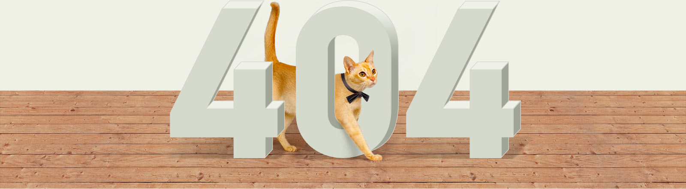

Страница не найдена. Возможно, страницу
съел кот, или вы ошиблись, набирая адрес.
Попробуйте заново набрать адрес, или воспользуйтесь навигацией:
Примеры реализации
Установка и технологии
Возможности
Стоимость
Контактная информация